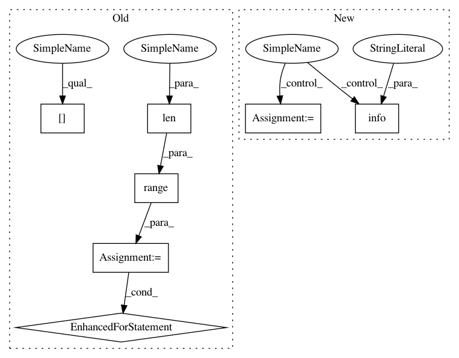

5667af96dade79ef77194d519182d4989494b3a4,ludwig/features/image_feature.py,ImageBaseFeature,add_feature_data,#Any#Any#Any#Any#Any#,192
Before Change
(num_images, height, width, num_channels),
dtype=np.uint8
)
for i in range(len(dataset_df)):
filepath = get_abs_path(
csv_path,
dataset_df[feature["name"]][i]
)
img = ImageBaseFeature._read_image_and_resize(
filepath,
width,
height,
should_resize,
num_channels,
preprocessing_parameters["resize_method"],
user_specified_num_channels
)
image_dataset[i, :height, :width, :] = img
data[feature["name"]] = np.arange(num_images)
class ImageInputFeature(ImageBaseFeature, InputFeature):
After Change
dtype=np.uint8
)
with Pool(5) as pool:
logger.info("Using 5 processes for preprocessing images")
data[feature["name"]] = np.array(
pool.map(read_image_and_resize, all_file_paths)
)
else:
In pattern: SUPERPATTERN
Frequency: 4
Non-data size: 7
Instances
Project Name: uber/ludwig
Commit Name: 5667af96dade79ef77194d519182d4989494b3a4
Time: 2019-08-25
Author: smiryala@uber.com
File Name: ludwig/features/image_feature.py
Class Name: ImageBaseFeature
Method Name: add_feature_data
Project Name: uber/ludwig
Commit Name: 7d9db23a389499c2764fb850cd19f853cc3e8565
Time: 2019-08-08
Author: smiryala@uber.com
File Name: ludwig/features/image_feature.py
Class Name: ImageBaseFeature
Method Name: add_feature_data
Project Name: tensorflow/tensorflow
Commit Name: 448e080c752a1b5f54c422401b41e824b0274a91
Time: 2020-11-17
Author: crccw@google.com
File Name: tensorflow/python/distribute/multi_process_lib.py
Class Name:
Method Name: _set_spawn_exe_path
Project Name: uber/ludwig
Commit Name: 5667af96dade79ef77194d519182d4989494b3a4
Time: 2019-08-25
Author: smiryala@uber.com
File Name: ludwig/features/image_feature.py
Class Name: ImageBaseFeature
Method Name: add_feature_data
Project Name: tensorflow/tensorflow
Commit Name: de336139770c6e9e035c0e402375efda48d75301
Time: 2020-11-18
Author: crccw@google.com
File Name: tensorflow/python/distribute/multi_process_lib.py
Class Name:
Method Name: _set_spawn_exe_path